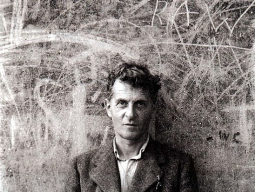

철학자 루트비히 비트겐슈타인은 저서 《철학 탐구》에서, 카테고리화에 관한 의논 중에서 게임의 정의를 내렸다. 이는 게임을 정의하고자 하는 최초의 기술로 여겨지고 있다. 게임이라 불리는 것은 룰이나 경쟁을 공통의 요소로서 가지고 있다. 그러나 그는 어떻게 게임을 정의하든지, 반드시 그 정의로부터 벗어나는 "게임(이라 칭해지는 활동)"이 있다면서, 그렇다 할지라도 게임이라 불리는 것은 일정한 유사점(가족적 유사성)에 의해 크게 포괄된다고 주장했다.
